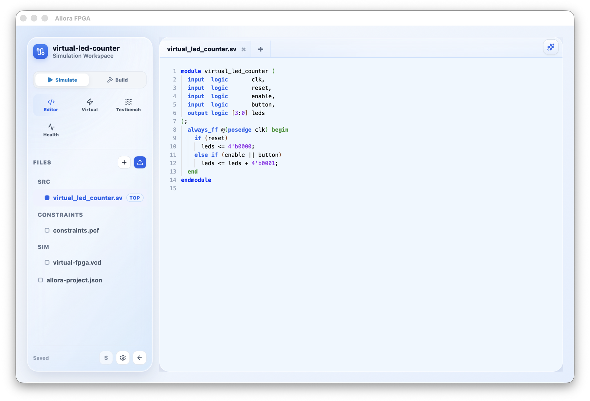
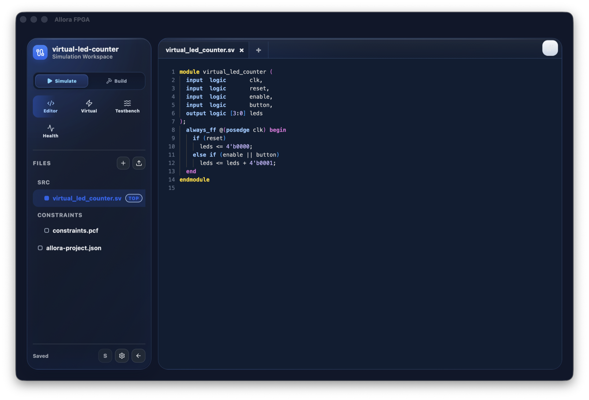
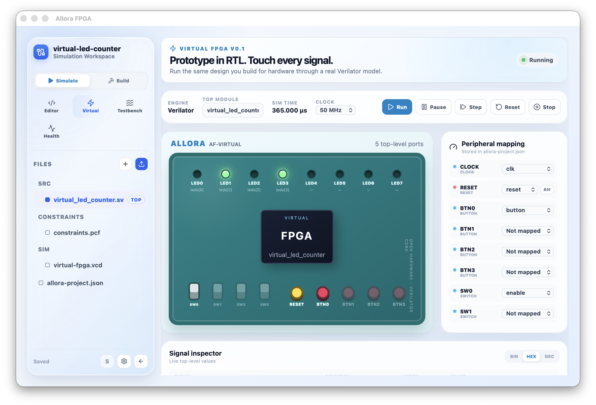
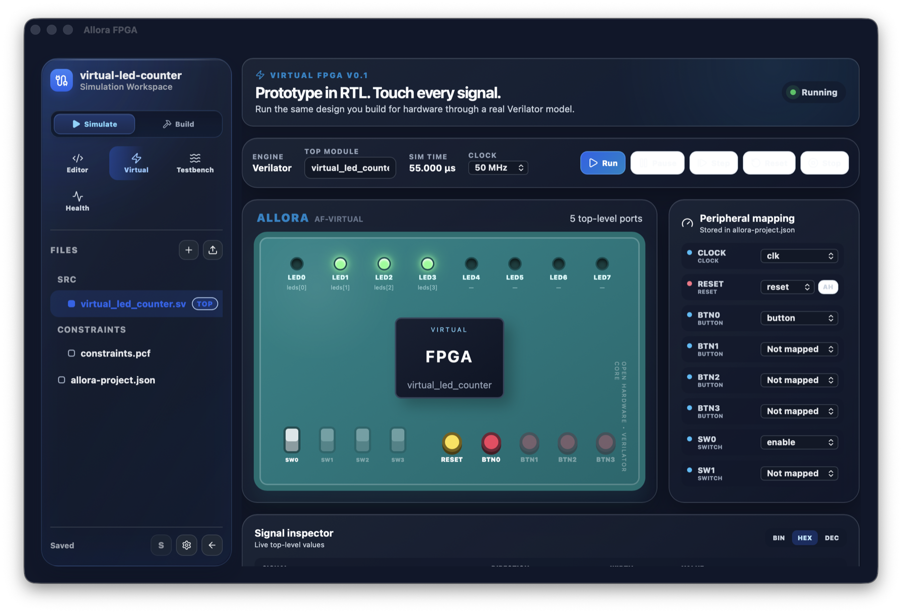
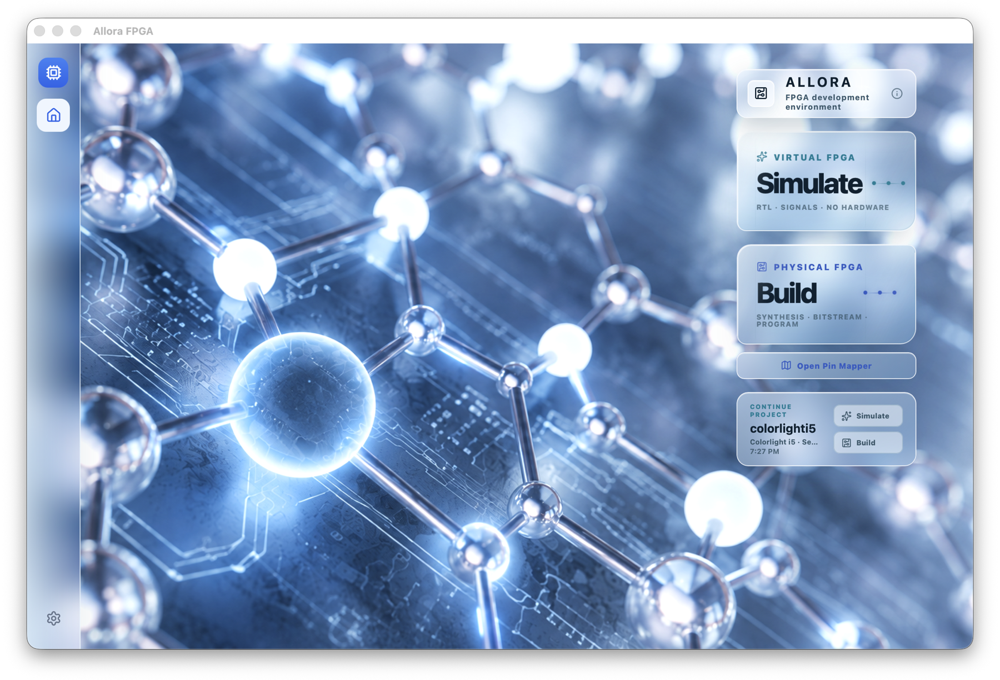
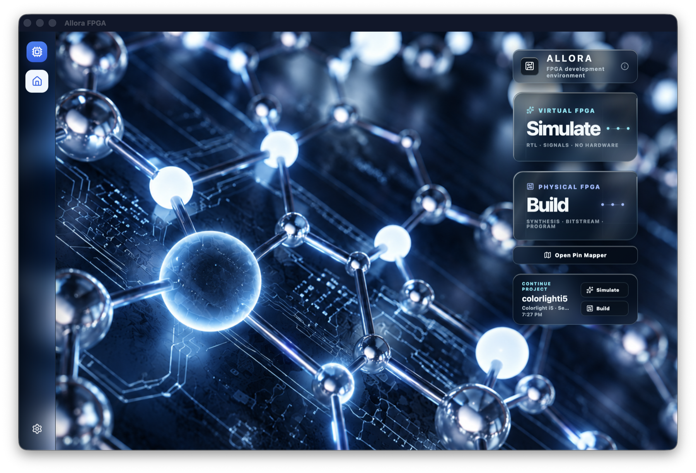
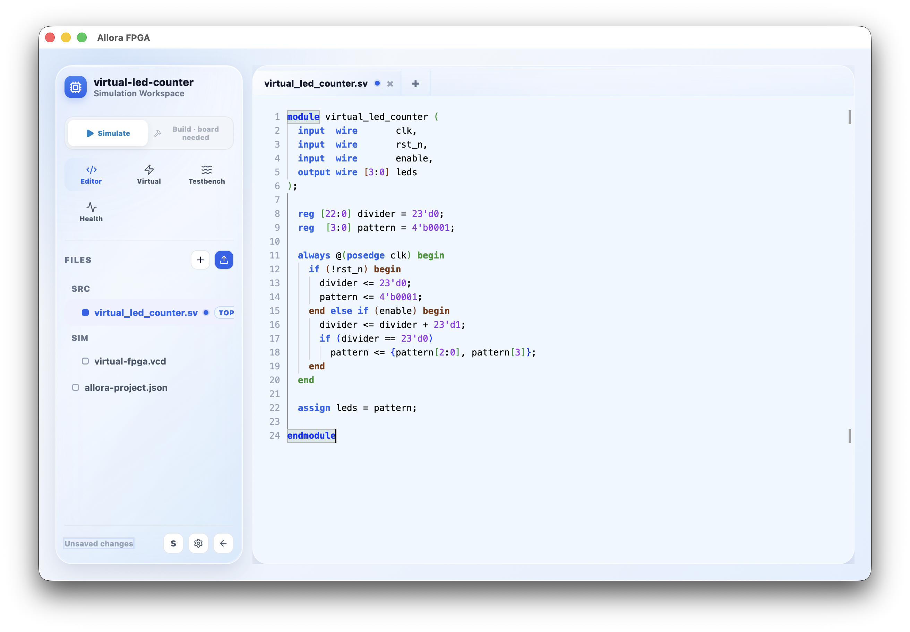
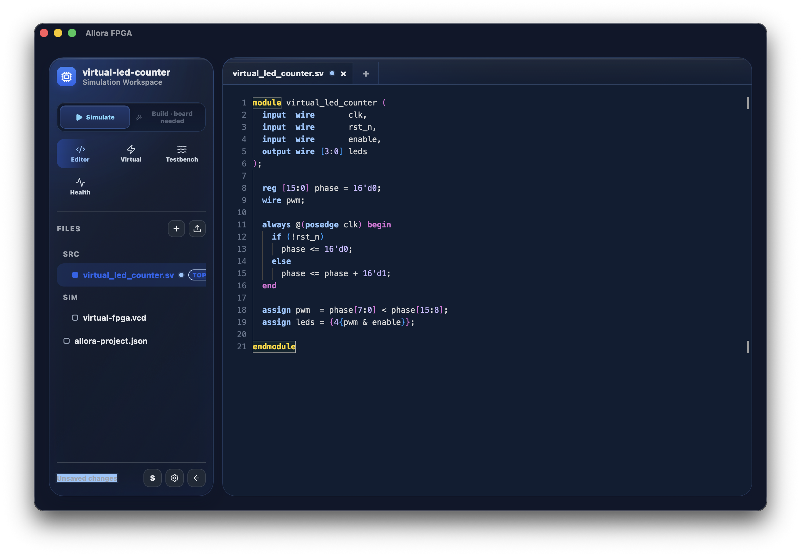

Virtual FPGASIM
Simulate
Compile real RTL into an interactive model. Drive switches and buttons, watch LEDs, and inspect every top-level signal.
FPGA Development Environment
Allora brings the open FPGA workflow into one visual desktop environment. Design and simulate your hardware virtually, then synthesize, place and route, and program all supported open-hardware FPGA boards without leaving the app.
Compile real RTL into an interactive model. Drive switches and buttons, watch LEDs, and inspect every top-level signal.
Take supported open-source boards from RTL through synthesis, place and route, bitstream, and programming.
Why Allora
Open FPGA development is powerful, but the pieces are scattered. Allora brings the editor, simulator, constraints, synthesis, place-and-route, programming, logs, and project state together in one unified desktop environment.
Virtual FPGA V0.1
Allora discovers your top-level ports and runs the design through a Verilator model. Your RTL running visually with no hardware required.




A compiled native Verilator model drives every value shown in the interface.
Map clock, reset, buttons, switches, LEDs, scalars, and individual vector bits.
Run, pause, step, reset, inspect signals, and optionally capture a VCD trace.
Workflow
Use your RTL and choose whether to build or simulate it.
Verilog, SystemVerilog, or VHDL using the open Monaco workspace.
The complete build and program path is for most open source boards. Allora includes visual pin data and constraint generation for a much wider set of mainstream boards.
Compare boards
Compare fully supported open-toolchain boards, then browse the wider pin-mapping catalog.
No boards match that search.
Inside Allora
Project files stay ordinary. Tool output stays visible. Virtual and physical mappings remain separate, so simulation never contaminates the hardware constraint flow.


Ice & Black Ice
Choose the bright clarity of Ice or the deep contrast of Black Ice. Both themes carry the same focused workspace through frosted surfaces, glassy depth, crisp highlights, and luminous accents.

Bright frosted panels frame a Verilog LED chaser without competing with the code.

Deep navy glass and luminous syntax bring a compact PWM generator into focus.
Interactive controls, mapped peripherals, and live LEDs stay legible across the bright workspace.
Glowing state, layered controls, and dark glass make the running design easy to follow.
Layered transparency separates tools without adding visual weight.
Cool edge light and crisp borders make controls easy to read at a glance.
Matching geometry keeps every workflow familiar across both themes.
Integrations
Connect your Codex or Claude Code account through its installed CLI in Settings → AI Integration. The beta currently checks installation and sign-in status. We’re working toward exposing Allora’s functions to your connected AI so it can help control the app and its FPGA workflow.
An installed CLI and a connected provider account are required for AI features.
Initialize a local Git repository when you create a project. When you’re ready to share it, use Publish to GitHub to connect your GitHub account, commit your work, create or select a repository, and push.
GitHub connection uses OAuth. Local Git projects do not require a GitHub account.
Desktop app
Allora FPGA for macOS is under active development. The installer will be available here when the first packaged release is ready.